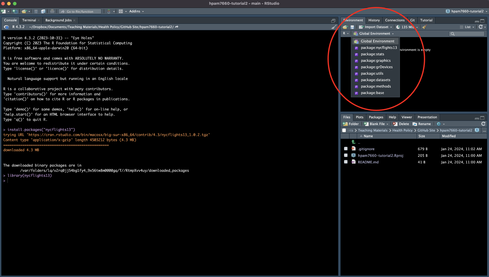
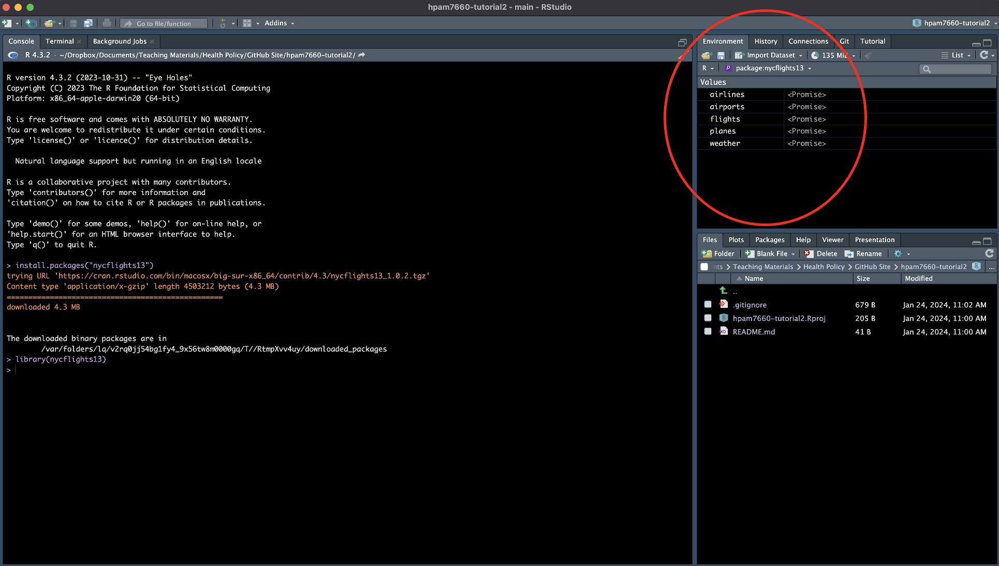

install.packages("nycflights13")
install.packages("dplyr")
install.packages("knitr")
library(nycflights13)
library(dplyr)
library(knitr)Navigating RStudio and using R Script and R Markdown Files
Create a GitHub Repository for Tutorial 2
Before we start with our coding exercises, we’ll want to create a new GitHub repository for Tutorial 2. Follow the instructions listed in Tutorial 1 to create a new GitHub repository called hpam7660-tutorial2.
Open a new R Project
Navigate to the File -> New Project tab in RStudio. Let’s call this project “Tutorial 2”. Follow the instructions from Tutorial 1 for linking the new project to your newly created GitHub repo.
RStudio Window
Let’s take a minute to briefly go over the RStudio interface. When you open RStudio, you’ll typically see the following three windows.

There’s a lot more here, but we’ll cover other aspects of RStudio as they come up in our tutorials and problem sets.
Console Command Line
Now that we have a new project linked to the proper GitHub repo, let’s start by running a few commands in the RStudio Console Window command line. This is the window at the bottom of RStudio (make sure the “Console” tab is selected). Throughout this tutorial, we’ll be working through the examples in Chapter 1.4 of ModernDive.
First we need to install and load the packages we’ll need for the tutorial (you may already have some of these packages installed, but it won’t hurt to reinstall them). Type each of the following commands in to the RStudio command line:
Exploring Data Frames
Now that we’ve loaded the packages and libraries, let’s take a look at the data objects contained in nycflights13. To do so, click on the dropdown icon next to “Global Environment” and select “package:nycflights13”.
 You should now see a series of objects in the “Environment” window.
 Let’s take a look at each of these objects to see what information they contain. Type the following code into the Console Window command line and hit enter:
flightsYou should now see a “tibble” that displays the first 8 columns and the first 10 rows of the flights data frame. The tibble also tells us that the data frame contains 336,766 more rows (beyond those displayed in the Console Window) and 11 more variables/columns (each of which is listed).
There are several other ways that we could examine the flights data frame including:
- Using the
View()function to open RStudio’s built-in data viewer. This allows us to scroll through all columns and rows in the data frame. - Using the
glimpsefunction, which is part of thedplyrpackage. This is similar to the tibble that we saw by simply typingflightsinto the console, but also includes each variables data type (e.g., integer, double, character, etc.) - Using the
kable()function, which is part of theknitrpackage. This function is helpful when we want to generate formatted output in an RMarkdown document, but it’s important to note thatkablewill print the entire data frame by default.
Let’s try some of these out. Use the glimpse function to take a look at the flights data frame and the kable function to examine the airlines data frame.
Now let’s make some manipulations to the data. Suppose we want a list of flight numbers and delay times for each United Airlines flight that was delayed by 4 hours or longer in January 2013. First, we can subset the data so that we only retain United Airlines flights. We can do this using the carrier variable since the code “UA” in this field identifies United Airlines flights. Go ahead and type the following into the Console command line and hit enter:
ua_flights <- filter(flights, carrier == "UA")Notice the new data object in the “Environment” tab called “ua_flights”. Let’s take a look at it using one of the viewing methods above (use whichever you prefer).
Now we need to determine which UA flights in January 2013 were delayed by 4 hours or longer. We can do another subset of the data using the year, month, and arr_delay variables (notice that the arr_delay variable is measured in minutes). Type the following into the Console command line and hit enter:
ua_delay <- filter(ua_flights, year == 2013, month == 1, arr_delay >= 240)Now we have a data frame that includes all UA flights that were delayed by 4 hours or longer in January 2013. Notice that we didn’t need a separate filter command for each argument (i.e., year, month, and arr_delay), we simply combined them all into a single filter command.
Finally, since we’re really only interested in the flight numbers and delay times, we can get rid of the extraneous variables in the data frame using the select command. Also,
ua_final <- select(ua_delay, flight, arr_delay)Now that we have our final dataframe, let’s take a look at the table of flight delays using the kable function:
kable(ua_final)Using R Scripts and R Markdown Documents
So far so good, but what happens if we were to close out of RStudio? Or, say 6 months from now, we decide we want to re-generate the table we just made? Entering commands directly into the Console Window command line is not a very good way to structure our workflow because once those comments are gone, they’re gone for good! A better way to track our work and ensure that we can reproduce our results if necessary is to use an R script file to write our code. Let’s take a look.
Navigate to the File -> New File -> R Script tab in RStudio. This should open a new window in RStudio called the “Source” window and a document called Untitled1 where you can write and save your R code.